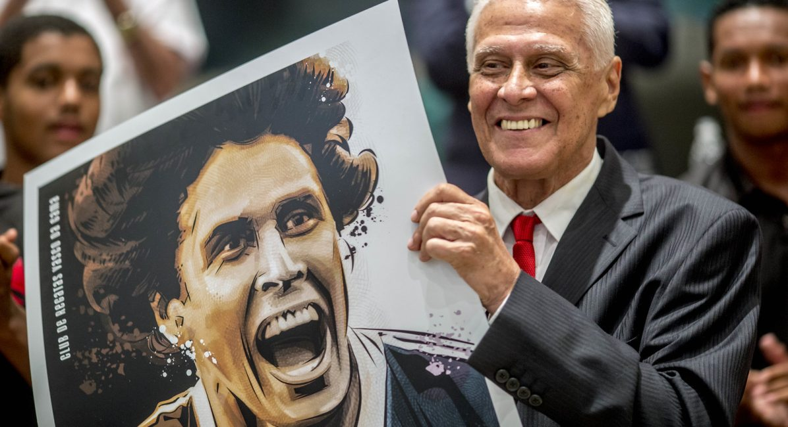
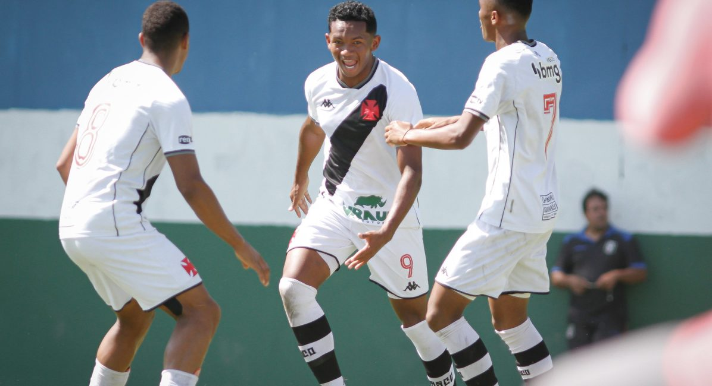
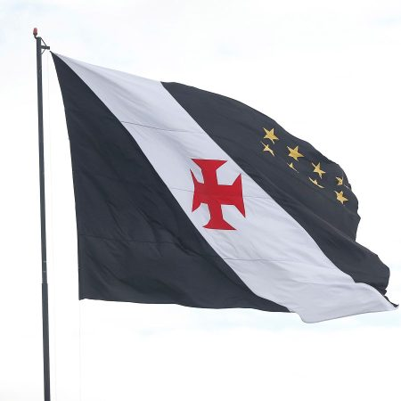
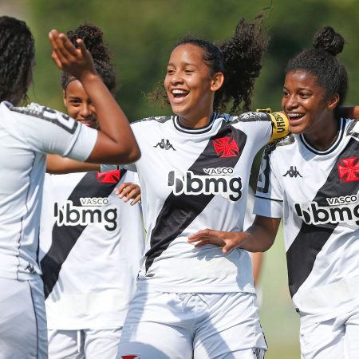
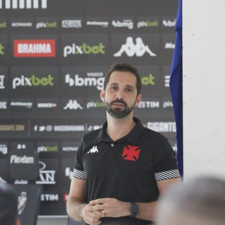

VASCO

Ídolo
Homenagem
Vasco vai inaugurar uma estátua em homenagem a Roberto dinamite.

Futebol de base
Atilheiro
Jovem promessa da base, impressiona pela qualidade.

Clube divulga o balanço financeiro com superávit de R$ 120 milhões
Abril, 26, 2022

CBF divulga tabela do Brasileiro Feminino Sub-20
Abril, 26, 2022

Futebol de Base realiza reunião com pais e responsáveis de atletas
Abril, 25, 2022|
CAMPEONATO BRASILEIRO SERIE B |
||
|---|---|---|
| 1º | Vasco | 30 |
| 2º | Bahia | 28 |
| 3º | Cruzeiro | 27 |
| 4º | Grêmio | 25 |
| 5º | Sport | 22 |
| 6º | Chapecoense | 21 |